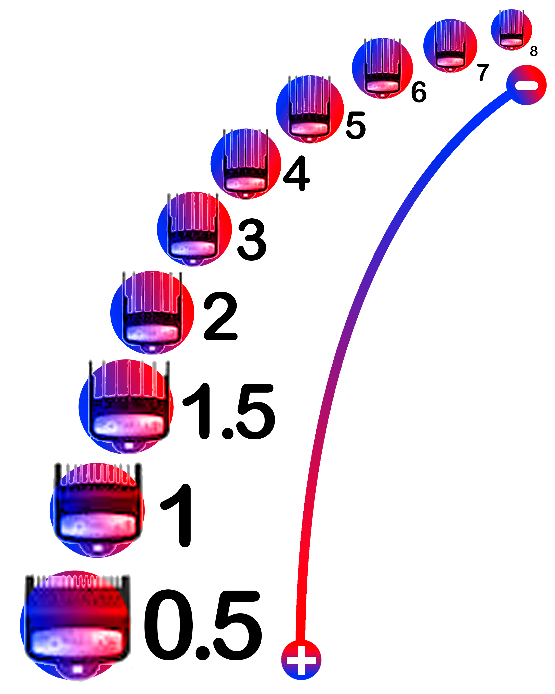

¿Cómo funcionan las guías de barbería?

Las guías son muy útiles para la cantidad de pelo que se requiere cortar, estas también se le conocen como niveles, la guía o nivel N.º 0.5 es la más corta, esta se puede remplazar con la misma máquina bajando toda la palanca, las guías más importantes para hacer cortes más precisos son de la guía N.º 0.5 hacia delante, las guías que es recomendable tener para hacer cortes modernos, son las guías N.º 0.5, el nivel 1, el nivel 1.5 para mejorar el detalle entre la guía N.º 1 y el nivel 2, la guía N.º 3 sirve más para las partes laterales superiores de la cabeza para eliminar las puntas que hacen ver el corte irregular.